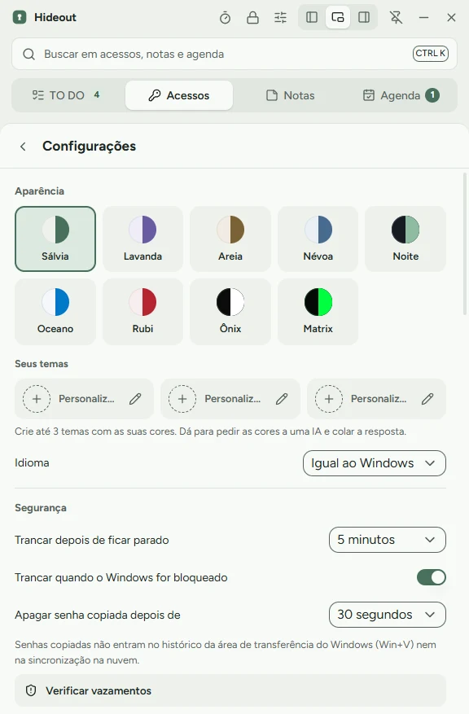

CtrlAltV
Muestra u oculta Hideout desde cualquier parte de Windows.
Todo lo que puedes hacer con el teclado y cada opción de la Configuración, con animaciones que muestran cómo funciona.
Muestra u oculta Hideout desde cualquier parte de Windows.
En cualquier campo de inicio de sesión, escribe usuario, Tab, contraseña y Enter.
Abre la búsqueda en accesos, notas y agenda. Enter copia la contraseña.
Cambia entre Accesos, Notas y Agenda.
Ctrl+N crea un elemento nuevo en la pestaña actual. Esc cierra el panel abierto.
Empieza con el 30% del ancho de la pantalla. Los tres botones de la barra superior la acoplan a la izquierda, a la derecha o la dejan flotar. Arrastrar la barra la libera. El alfiler mantiene Hideout sobre las demás ventanas.
Haz clic en los puntos. La contraseña va al portapapeles marcada para no entrar al historial de Win+V ni a la nube, y se borra sola en el tiempo que elijas.
Hideout entiende fechas escritas como las dices (por ahora en portugués, como en los ejemplos). Con fecha y hora, la tarea se vuelve un recordatorio de Windows.

Windows 10 y 11. La interfaz de la app está en portugués. Windows puede avisar que la app es desconocida: haz clic en Más información y luego en Ejecutar de todas formas.